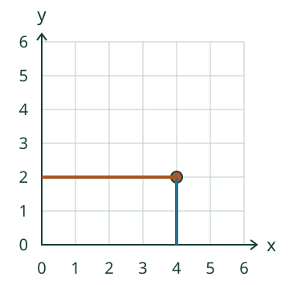
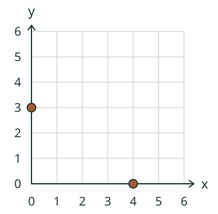

Lue Loikan piste: ensin x, sitten y.
Lukemisen vaiheet
Lue paikka kahdesta suunnasta
Loikan kartassa on merkitty piste. Selvitä sen x ja y. Seuraa ensin pystylinjaa alas x-akselille, sitten vaakalinjaa vasemmalle y-akselille.
Kirjoita vaakaluku ensin. Laske välit nollasta, älä viivoja.
Esimerkki: (4, 2)
Etsi origo (0, 0). Pisteen alla x-akselilla on 4: vaakasuunnassa on neljä väliä. Pisteen vasemmalla puolella y-akselilla on 2: pystysuunnassa on kaksi väliä. Kirjoita (4, 2).

Nolla: (0, 3)
Piste on pystyakselilla. Se ei ole yhtään oikealla: x on 0. Se on kolme väliä ylhäällä: y on 3.

Vältä järjestysvirhe
(2, 4) ei tarkoita samaa kuin (4, 2). Lue aina ensin x eli vaakaluku, sitten y eli pystyluku. Ruutujen keskikohdat eivät ole tämän kartan pisteitä.
Uusi merkki, sama lukutapa
Valitse Uusi karttamerkki. Loikan leiripaikka on eri kohdassa. Senkin paikka löytyy seuraamalla merkin linjoja akseleille. Kuvan nimi ei muuta koordinaattien järjestystä.
Lisätutkimus ja paperilla kokeilu
Piirrä pisteet (1, 3), (4, 3) ja (6, 3). Lue paikat toiselle. Miksi toinen luku pysyy kolmena? Toisen voi pyytää piirtämään uuden pisteen; merkitseminen on eri teko kuin jo näkyvän pisteen lukeminen.
Lopuksi: Selitä tai näytä, miten luet uuden pisteen. Mitä x kertoo, jos piste on pystyakselilla?
Opettajalle: prosessi ja rajat
Luokat 3–6. Pakolliset M-GEO-02 ja M-NUM-07. Frozen-rooli on representation/process. Harjoitellaan toistettavaa lukemista: origo → vaakasijainnin lukeminen → pystysijainnin lukeminen → järjestetty pari → tarkistus kuvaan. Piirtäminen, apulinjan katselu tai yksi oikea vastaus ei ole tämän prosessin formaali rubriikki tai henkilökohtainen hallintatila.
Rajaus: kartan yksikkövälin kokonaisluvut 0–6. I neljänneksen sisäosa on x > 0, y > 0; nollakoordinaatit ovat akseleilla, (0, 0) on origo. Miinuksia tai muita mittakaavoja ei oleteta. Apulinjoja saa käyttää heti; puhuminen tai pakollinen vaiheiden kuittaus ei kuulu tarkistukseen.
Aikuinen voi lukea ja auttaa seuraamaan rivejä. Tämä visuaalinen ruudukko ei yksin varmista näkövammaisen itsenäistä kartanlukua; tarjoa tunnusteltava ruudukko ja todellinen ohjaus. Paikallinen palaute koskee vain nykyistä paria. Ei pysyvyyden, viivästetyn muistamisen, oppimistuloksen tai ihmiskatselmuksen väitettä eikä henkilöhistoriaa.